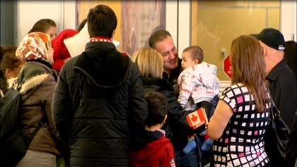
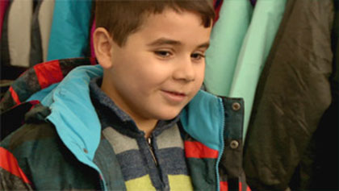
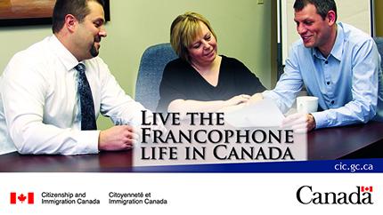
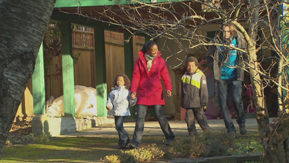

A step-by-step look at Biometrics
|
4:32 |
2018-06-29 |
IEC co-op in France : Marie-Chantal Germain
|
5:25 |
2018-06-18 |
Marriage fraud: Stories from victims
|
5:02 |
2018-06-08 |
Biometrics: Making travel easier while keeping Canada safe
|
2:29 |
2018-05-25 |
International Students: Study, work and stay in Canada
|
2:37 |
2018-03-22 |
Atlantic Immigration Pilot – Kirk MacKinnon
 |
0:27 |
2018-02-22 |
Atlantic Immigration Pilot – Karen Holden
|
0:24 |
2018-02-22 |
Atlantic Immigration Pilot – Kingsly Chia
|
0:24 |
2018-02-20 |
Protect yourself against fraud
|
0:42 |
2018-01-24 |
Electronic Travel Authorization (eTA) in one minute
|
1:02 |
2016-03-15 |
Christmas message from Minister Hussen
|
0:46 |
2017-12-22 |
Francophone immigration in Canada: Benefits of being bilingual
|
0:27 |
2017-11-09 |
Francophone immigration in Canada: Communities outside Quebec
|
0:24 |
2017-11-09 |
Francophone immigration in Canada: Temporary workers
|
0:25 |
2017-11-09 |
Francophone immigration in Canada: Express Entry
 |
0:29 |
2017-11-09 |
Francophone immigration in Canada: Official languages
|
0:23 |
2017-11-09 |
Message from the Minister: Celebrate National Francophone Immigration Week 2017
|
2:06 |
2017-10-30 |
Claiming Refugee Status in Canada: What You Need to Know
|
2:07 |
2017-08-29 |
Start-up Visa Program
 |
0:49 |
2017-08-10 |
Welcome home to Canada – Celebrate being Canadian
 |
2:16 |
2017-08-10 |
How the Atlantic Immigration Pilot works: (1) The Employer Designation Process
|
2:45 |
2017-07-12 |
How the Atlantic Immigration Pilot works: (2) Applicant Endorsement
|
2:46 |
2017-07-12 |
How the Atlantic Immigration Pilot works: (3) Immigration Application and Post-Arrival Support
|
3:12 |
2017-07-12 |
A New Life in Canada
|
11:56 |
2017-06-20 |
How to use IRCC’s Employer Portal for the International Mobility Program
|
7:52 |
2017-05-02 |
What you need to know about the citizenship test
|
5:07 |
2017-03-30 |
Syrian children discover hockey
|
3:21 |
2017-03-23 |
Settlement services for newcomers
|
0:34 |
2017-03-10 |
70th Anniversary of Canadian Citizenship
|
1:47 |
2017-03-08 |
Young Canadians: Travel and work abroad with International Experience Canada (IEC)
|
1:23 |
2017-01-16 |
Immigrate to Canada: How to create an Express Entry profile
|
4:42 |
2016-12-28 |
Canada welcomes Syrian refugees: A look back
|
1:44 |
2016-12-12 |
Daniel Alfredsson on becoming a Canadian Citizen
|
1:33 |
2016-10-15 |
Refugee family learning French and starting a new life in Quebec
|
5:09 |
2016-10-11 |
Celebrate being Canadian - Remarks from Minister McCallum
|
1:32 |
2016-10-08 |
Diversity is Canada’s Strength - art and culture series: Giorgia Fumanti
|
2:42 |
2016-10-07 |
Electronic Travel Authorization (eTA): Don’t get scammed
|
0:17 |
2016-10-03 |
True North Strong and Free: James Nguyen
|
0:57 |
2016-09-29 |
True North Strong and Free: Hung Vu
|
0:44 |
2016-09-29 |
True North Strong and Free: Lan Ton
|
0:41 |
2016-09-29 |
Refugees building a new life in Canada: Winnipeg and Charlottetown
|
5:39 |
2016-08-30 |
Express Entry - Immigrate to Canada as a skilled worker
|
3:58 |
2016-08-02 |
Express Entry - A new tool for hiring skilled immigrants
|
3:28 |
2016-08-02 |
Young volunteers fundraise to welcome Syrian refugees: Dartmouth
|
1:47 |
2016-06-13 |
Electronic Travel Authorization (eTA): What you need to know
|
2:13 |
2016-04-16 |
Helping young newcomers integrate in Canada: Halifax
|
5:29 |
2016-04-15 |
Resettling to Canada: Welcoming Syrian Refugees
|
3:47 |
2016-03-30 |
Nova Scotians helping Syrian refugees to resettle in Canada
|
4:19 |
2016-03-17 |
Canada’s Humanitarian Tradition: Argentinian Perspective
 |
1:05 |
2016-03-11 |
Canada’s Humanitarian Tradition: Refugee Perspective
|
0:39 |
2016-03-01 |
Welcome to Canada to the Kurdi family
 |
0:39 |
2016-01-06 |
Tima Kurdi speaks about refugees
|
0:26 |
2016-01-06 |
Fawad - Journey to Canada: Stories of Refugees
 |
0:50 |
2015-12-22 |
Vietnamese refugees pay it forward: James Nguyen
 |
0:58 |
2015-12-22 |
Vietnamese refugees pay it forward: Le Luong
|
0:54 |
2015-12-22 |
From Damascus to Toronto: the story of Mohamed
 |
0:56 |
2015-12-22 |
Canada’s Humanitarian Tradition: Hala
 |
0:39 |
2015-12-18 |
Canada’s Humanitarian Tradition: Vanig
|
0:39 |
2015-12-18 |
Canada’s Humanitarian Tradition: Youssef
|
1:37 |
2015-12-18 |
Canada’s Humanitarian Tradition: Kosovo Refugee Arrival
|
1:40 |
2015-12-16 |
Syrian refugees: Second flight arrives
 |
0:41 |
2015-12-14 |
Syrian refugees: First flight arrives in Toronto on December 10, 2015
 |
9:37 |
2015-12-11 |
Forum on Welcoming Syrian Refugees to Canada - Governor General of Canada
 |
9:37 |
2015-12-11 |
Forum on Welcoming Syrian Refugees to Canada
 |
10:04 |
2015-12-11 |
Forum on Welcoming Syrian Refugees to Canada - Mr. Volker Türk
 |
3:47 |
2015-12-11 |
Integration of Children in Francophone Communities
|
2:33 |
2015-12-10 |
Opportunities in Canada
|
3:07 |
2015-12-10 |
Available French Settlement Services
|
3:24 |
2015-12-10 |
French in the Workplace Outside Quebec
|
3:16 |
2015-12-10 |
Canada’s Humanitarian Tradition: Tuyet Lam
|
0:38 |
2015-12-03 |
Canada’s Humanitarian Tradition: Gerry Maffre
 |
0:34 |
2015-12-03 |
Canada’s Humanitarian Tradition: James Nguyen
|
0:34 |
2015-12-03 |
Canada’s Humanitarian Tradition: Lan Ton
 |
0:34 |
2015-12-03 |
The Canadian Francophone Experience
|
11:33 |
2015-03-20 |
The Canadian Citizenship Ceremony: What you need to know
|
10:42 |
2015-03-05 |
Express Entry: Canada, Your New Home
|
1:27 |
2014-12-31 |
What does it mean to be Francophone in Canada?
|
2:01 |
2014-10-31 |
Feeling welcome in Francophone communities
|
2:01 |
2014-10-31 |
Living in Francophone communities
|
2:32 |
2014-10-31 |
The benefits of speaking French or being bilingual
|
2:15 |
2014-10-31 |
Becoming bilingual
 |
2:30 |
2014-10-31 |
True North Strong and Free: Guy Gérard Chabe Ngako
|
1:11 |
2014-10-09 |
True North Strong and Free: Jonathan Mpunge
|
0:55 |
2014-10-09 |
Destination Canada
|
4:45 |
2014-09-22 |
Tips for taking passport photos of adults
|
2:07 |
2014-09-05 |
Tips for taking passport photos of toddlers
 |
1:39 |
2014-09-05 |
Tips for taking passport photos of babies
|
1:52 |
2014-09-05 |
The Canadian ePassport
|
3:03 |
2014-09-05 |
The Canadian ePassport chip
|
1:42 |
2014-09-05 |
The Canadian passport: Excellent value for money
|
1:57 |
2014-09-05 |
How Passport Canada is funded
|
2:14 |
2014-09-05 |
Language Training for Canada
|
5:18 |
2014-07-31 |
Advancing foreign credential recognition
 |
4:37 |
2014-06-24 |
Blended Visa Office-Referred Program
|
4:50 |
2014-04-28 |
The Oath of Citizenship
|
0:42 |
2014-04-09 |
Reaffirmation of the Oath of Citizenship
|
0:42 |
2014-04-09 |
Choose your immigration representative carefully
|
1:00 |
2014-03-13 |
True North Strong and Free: Tahina Rabezanahary
|
1:12 |
2013-10-18 |
True North Strong and Free: Rojas Family
|
1:49 |
2013-10-18 |
True North Strong and Free: David Shentow
|
2:11 |
2013-10-18 |
How to Host a Citizenship Ceremony
|
11:09 |
2013-09-16 |
Making Economic Immigration Work for Canada
|
4:57 |
2013-07-08 |
Educational Credential Assessment Process
|
3:00 |
2013-05-23 |
Use of a Representative Form (IMM 5476)
 |
7:02 |
2013-05-17 |
Before You Arrive in Canada
|
10:58 |
2013-04-19 |
Your First Two Weeks in Canada
|
9:33 |
2013-04-19 |
Permanent Resident Card
|
2:45 |
2013-01-25 |
Free
|
0:31 |
2012-10-12 |
Reaffirm Your Citizenship: The Great Canadian Oath
|
2:36 |
2012-07-26 |
Immigration and Citizenship Forms: The Basics
|
1:28 |
2012-05-02 |
Save Time: Send a Complete Application
|
8:12 |
2012-04-23 |
Journey to Canada: Stories of Refugees - A Brighter Future
|
4:10 |
2011-11-24 |
Operation Stork: One Year Later
 |
2:35 |
2011-06-18 |
Journey to Canada: Stories of Refugees - Canada Reaches Out
|
3:55 |
2011-06-17 |
Journey to Canada: Stories of Refugees - Fawad
|
3:18 |
2011-03-13 |
Journey to Canada: Stories of Refugees - Madut
|
3:05 |
2010-11-09 |
Journey to Canada: Stories of Refugees - Fatima
|
3:01 |
2010-06-18 |
Becoming Canadian: Provincial Nominee Program
|
2:00 |
2010-04-22 |
Operation Stork
 |
1:50 |
2010-02-03 |
Becoming Canadian: Integration
|
2:00 |
2009-06-17 |
Becoming Canadian: Combating immigration fraud
|
2:30 |
2009-06-16 |
Becoming Canadian: Refugee Resettlement Program
|
2:00 |
2009-06-16 |
Waking up Canadian
|
1:13 |
2009-04-08 |
Canadian Experience Class: Students
|
2:30 |
2009-03-13 |
Becoming Canadian: Citizenship
|
2:10 |
2009-03-03 |